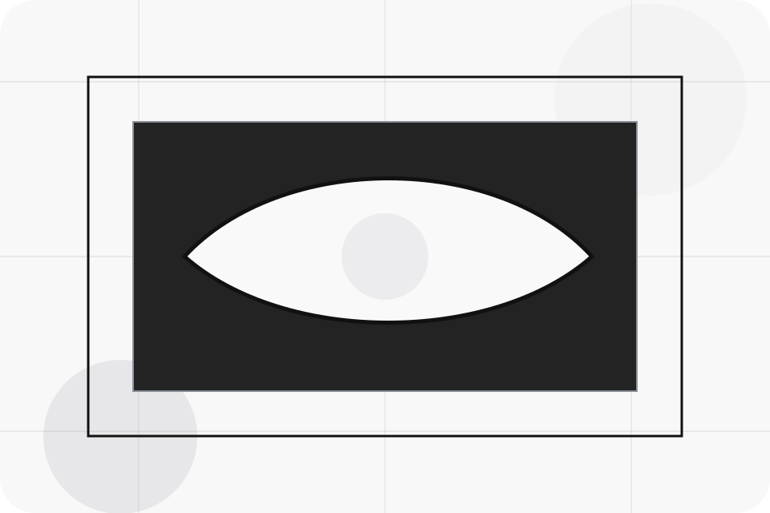
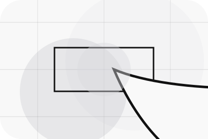
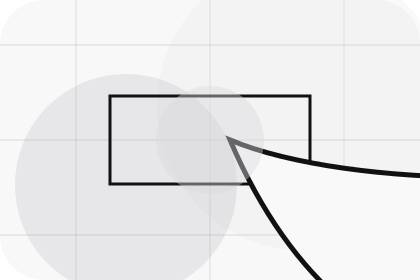
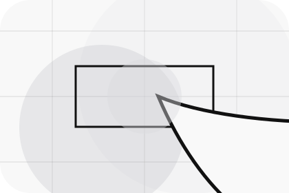
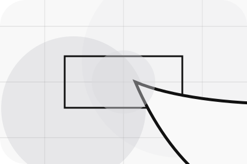
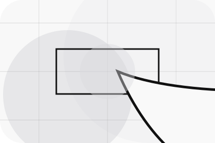
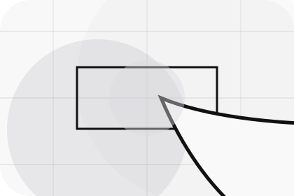
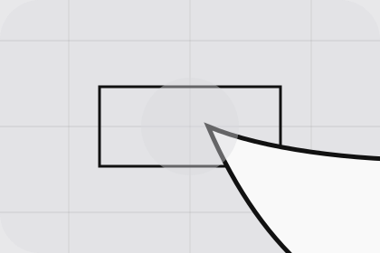

Better State
Deals defines what becomes clearer, easier, or safer when Motor is the chosen route.
Offers / 01
Offers opens as a clear automotive decision hub: what Motor offers, who it helps, why it matters, and which route to take first.
The first screen combines positioning, proof, primary action, and fast internal navigation, so people can act immediately or compare the rest of the offers route with context.
Stark vehicle product hero
Select the closest route and Motor keeps the next step, proof, and follow-up expectation aligned with purchase confidence and desire.

Offers / 02
Deals defines the better state Motor is built to create, with enough detail to make the promise believable.
A vehicle showroom site with precise white space, car-card rhythm, finance paths, and test-drive CTAs. The section grounds that direction in concrete benefits, visible tradeoffs, and a next route visitors can use when the promise feels relevant.
Explore OffersDeals defines what becomes clearer, easier, or safer when Motor is the chosen route.
The benefit is tied to purchase confidence and desire, not a vague quality claim.
Visitors get a linked path to compare the promise against services, standards, or examples.
Offers / 03
Finance defines the better state Motor is built to create, with enough detail to make the promise believable.
A vehicle showroom site with precise white space, car-card rhythm, finance paths, and test-drive CTAs. The section grounds that direction in concrete benefits, visible tradeoffs, and a next route visitors can use when the promise feels relevant.
Explore Offers

Finance defines what becomes clearer, easier, or safer when Motor is the chosen route.
Offers / 04
Service defines the better state Motor is built to create, with enough detail to make the promise believable.
A vehicle showroom site with precise white space, car-card rhythm, finance paths, and test-drive CTAs. The section grounds that direction in concrete benefits, visible tradeoffs, and a next route visitors can use when the promise feels relevant.
Explore OffersService defines what becomes clearer, easier, or safer when Motor is the chosen route.
The benefit is tied to purchase confidence and desire, not a vague quality claim.
Visitors get a linked path to compare the promise against services, standards, or examples.
Offers / 05
Seasonal defines the better state Motor is built to create, with enough detail to make the promise believable.
A vehicle showroom site with precise white space, car-card rhythm, finance paths, and test-drive CTAs. The section grounds that direction in concrete benefits, visible tradeoffs, and a next route visitors can use when the promise feels relevant.
Explore OffersSeasonal defines what becomes clearer, easier, or safer when Motor is the chosen route.
The benefit is tied to purchase confidence and desire, not a vague quality claim.
Visitors get a linked path to compare the promise against services, standards, or examples.
Offers / 06
Tradein defines the better state Motor is built to create, with enough detail to make the promise believable.
A vehicle showroom site with precise white space, car-card rhythm, finance paths, and test-drive CTAs. The section grounds that direction in concrete benefits, visible tradeoffs, and a next route visitors can use when the promise feels relevant.
Explore OffersMotor structures tradein around better state, practical gain, and a clear next route so visitors can compare the block quickly before they book a test drive.
Book Test DriveOffers / 07
Packages defines the better state Motor is built to create, with enough detail to make the promise believable.
A vehicle showroom site with precise white space, car-card rhythm, finance paths, and test-drive CTAs. The section grounds that direction in concrete benefits, visible tradeoffs, and a next route visitors can use when the promise feels relevant.
View Pricing
Packages defines what becomes clearer, easier, or safer when Motor is the chosen route.

The benefit is tied to purchase confidence and desire, not a vague quality claim.

Visitors get a linked path to compare the promise against services, standards, or examples.
Packages defines what becomes clearer, easier, or safer when Motor is the chosen route.
ScopedThe benefit is tied to purchase confidence and desire, not a vague quality claim.
QuotedVisitors get a linked path to compare the promise against services, standards, or examples.
RetainerOffers / 08
Terms defines the better state Motor is built to create, with enough detail to make the promise believable.
A vehicle showroom site with precise white space, car-card rhythm, finance paths, and test-drive CTAs. The section grounds that direction in concrete benefits, visible tradeoffs, and a next route visitors can use when the promise feels relevant.
Explore OffersTerms defines what becomes clearer, easier, or safer when Motor is the chosen route.
The benefit is tied to purchase confidence and desire, not a vague quality claim.

Visitors get a linked path to compare the promise against services, standards, or examples.
Offers / 09
Savings defines the better state Motor is built to create, with enough detail to make the promise believable.
A vehicle showroom site with precise white space, car-card rhythm, finance paths, and test-drive CTAs. The section grounds that direction in concrete benefits, visible tradeoffs, and a next route visitors can use when the promise feels relevant.
Explore OffersSavings defines what becomes clearer, easier, or safer when Motor is the chosen route.
The benefit is tied to purchase confidence and desire, not a vague quality claim.
Visitors get a linked path to compare the promise against services, standards, or examples.
Offers / 10
Motor closes the offers route with a clear action, a quick reminder of the value, and a low-friction way to book a test drive.
Visitors who are ready can use the primary action. Visitors who are still comparing can scan the section links, proof, and support routes before they book a test drive.
Book Test DriveThe final block keeps the choice simple: act now, compare one more proof route, or send enough detail for a focused response.
Book Test Drivepurchase confidence and desire
A vehicle showroom site with precise white space, car-card rhythm, finance paths, and test-drive CTAs. Offers ends with a direct path to book a test drive, plus enough context for visitors who still need to compare.

Book Test DriveInformation is provided for planning and should be reviewed for the final client, location, and operating rules.